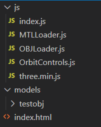
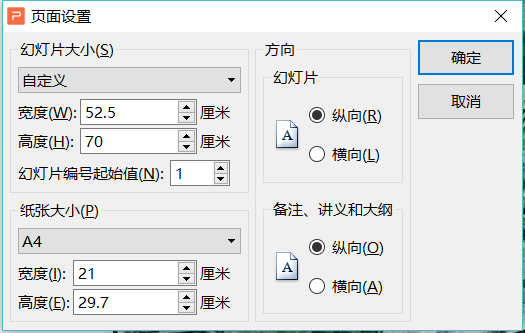
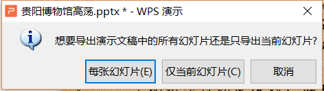
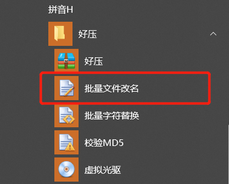

1. 模型展示页面
模型展示页面是基于There.js库、模型和材质加载器以及控制器，实现模型在web端的简单展示。具体实现逻辑已写好，用户只需修改obj模型路径等简单操作即可实现模型展示demo。obj模型导出及注意事项见3dsMax技术文档。模板已发布到GitHub供读者学习参考：
下图为项目目录结构：

其中，js文件夹包含全部Javascript脚本文件，models文件夹用来存储obj模型，index.html是项目的主页。
js文件夹中，除index.js外，均是由Three.js为我们提供的模型加载器和控制器脚本文件。而页面的主要逻辑全部封装到了index.js中。
1.1 更改网页名称
在index.html文件中，修改<title>标签内的内容即可：
<title>XXX村寨模型展示</title>
1.2 修改模型路径
首先将obj模型拷贝至models文件夹下。
在js/index.js文件中，修改15和16行的代码如下：
//模型路径
let mat1 = './models/testobj/lancuiting.mtl';
let obj1 = './models/testobj/lancuiting.obj';
注意路径使用相对路径。
1.3 控制模型体积
js/index.js文件中，修改51行代码中的参数即可，注意三个数字应保持一致：
model1.scale.set(1.4, 1.4, 1.4);
1.4 其他可配置选项
如需修改灯光位置及强度，可以修改js/index.js文件中46和47行代码：
//括号中的2为强度
let dLight = new THREE.DirectionalLight(0xFFFFFF, 2);
//光源的位置
dLight.position.set(500, 1000, 4000);
2. Turn.js翻页特效
展示平台的第一个模块是少数民族建筑特征分析。针对大量的图文资料，传统的页面布局得不到很好的展示与交互效果。为提高用户体验，选择类似书本翻页的形式作为展示图文视频资料的方式。Turn.js是一个JavaScript库，利用HTML5的所有优点，可以使内容呈现起来像一本真正的书或杂志。
关于Turn.js的入门教程可以看siki学院的免费课程，也可以通过官网进行学习。
siki学院：http://www.sikiedu.com/course/517/tasks
Turn.js官网：http://www.turnjs.com/
由于少数民族建筑资料篇幅较多，文章内容比较复杂，且Turn.js并没有为用户提供书页模板，全部样式都是用户在CSS中定义的。考虑到书页制作的便捷性与美观性，选择PPT来制作展示书籍的内容，再以加载图片的方式将内容加载到网页端，实现具有翻页效果的少数民族建筑特征分析资料展示模块。
整个模块的制作流程主要分两部分，图文内容的准备工作与翻页效果的实现。
2.1 图文内容的准备工作
PPT模板及主要实现代码已与平台源代码一同发布至GIthub供大家学习参考：
模板的样式已经设计制作完成，包括封面的设计、内容的布局和字体的选择。也可以根据自己的审美，重新设计排版布局。注意页面设计中的方向要保证是纵向，具体尺寸取决于Turn.js中定义的宽和高。参考配置如下：

将撰写好的少数民族建筑特征分析图文资料复制到PPT模板中，进行排版布局后，完成图文内容的准备工作。
点击右上角文件、另存为，设置导出路径后，考虑到网页端的加载效率，文件类型选择较小的.jpg。单击保存，
在弹出的提示框中，选择每张幻灯片。

导出完成后如下图。
为了加载图片的代码编写的简洁性，需要批量修改每张图片的名字。网上有很多批量修改文件名的方法，这里选择一款解压缩软件好压内置的批量文件改名功能，可以在开始菜单中找到。

首先根据提示，批量添加所有图片文件；在命名规则中填入#。单击开始重命名即可。
至此，完成翻页效果的素材准备工作。
2.2 翻页效果的实现
将图片文件夹重命名为英文名称，例如miao_img，将其拷贝到/ADP/turn_img路径下。批量加载的代码已写好，需要调整page/miao_turn_page.html中的几行代码：
//line 47 修改路径"turn_img/miao_img"
"<img src=\"../turn_img/miao_img/" + i + ".jpg\" alt=\" \" width=\"525\" height=\"700\">\n" +
//line 100 修改路径"turn_img/miao_img"
<img src="../turn_img/miao_img/1.jpg" alt=" " width="525" height="700" />
加载完成后，根据实际页码，调整目录页数及跳转按钮的页码。
//line 89-91 pageTo(修改这里面的数字)
<a href="javascript:pageTo(1)" class="btn btn-secondary" role="button">封面</a>
<a href="javascript:pageTo(2)" class="btn btn-secondary" role="button">目录</a>
<a href="javascript:pageTo(72)" class="btn btn-secondary" role="button">封底</a>
//line 112-119 pageTo(修改这里面的数字) 修改目录文字内容
<div class="list-group" style="left: 50%">
<a href="javascript:pageTo(4)"
class="list-group-item list-group-item-action">1.村寨概述-1</a>
<a href="javascript:pageTo(40)"
class="list-group-item list-group-item-action">2.村落及居住建筑分析-37</a>
<a href="javascript:pageTo(56)"
class="list-group-item list-group-item-action">3.建筑遗传特征-53</a>
</div>
完成翻书效果展示少数民族建筑特征模块的制作。
3.建筑展示平台
展示平台的第二部分是建筑结构体系展示部分，也是平台的核心部分。包括模型爆炸、构件动态拆分以及模型剖切三大功能模块。由于具体实现逻辑已封装完毕，只需修改模板中的几行代码即可。模板下载链接：
3.1 自定义主页样式
模板中的主页样式如下图：
文字部分及插图内容均可自定义，具体替换位置在根目录下的index.html中很明显，这里不再赘述。值得一提的是背景图片的修改路径，需要修改index_assets/css/main.css文件的1627行代码：
background-image: linear-gradient(to top, rgba(46, 49, 65, 0.8), rgba(46, 49, 65, 0.8)), url("../../index_images/bg.jpg");
3.2 替换obj模型
首先将obj模型及DAE模型拷贝至models文件夹下。
在js/miao_model1.js以及js/miao_model2.js文件中，修改变量mat1和obj1的值如下：
//模型路径
let mat1 = '../models/testModel/objTest/objTest.mtl';
let obj1 = '../models/testModel/objTest/objTest.obj';
注意路径使用相对路径。
模型剖切模块使用DAE格式的模型文件，在js/miao_simulation.js文件中，修改第28行代码：
loader.load( '../models/testModel/DAETest/DAEtest.DAE', function ( collada ) {
3.3 其他可配置选项
可参考本文第一章节中的部分内容。
最后修改于 2021-01-08